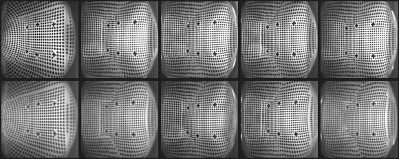
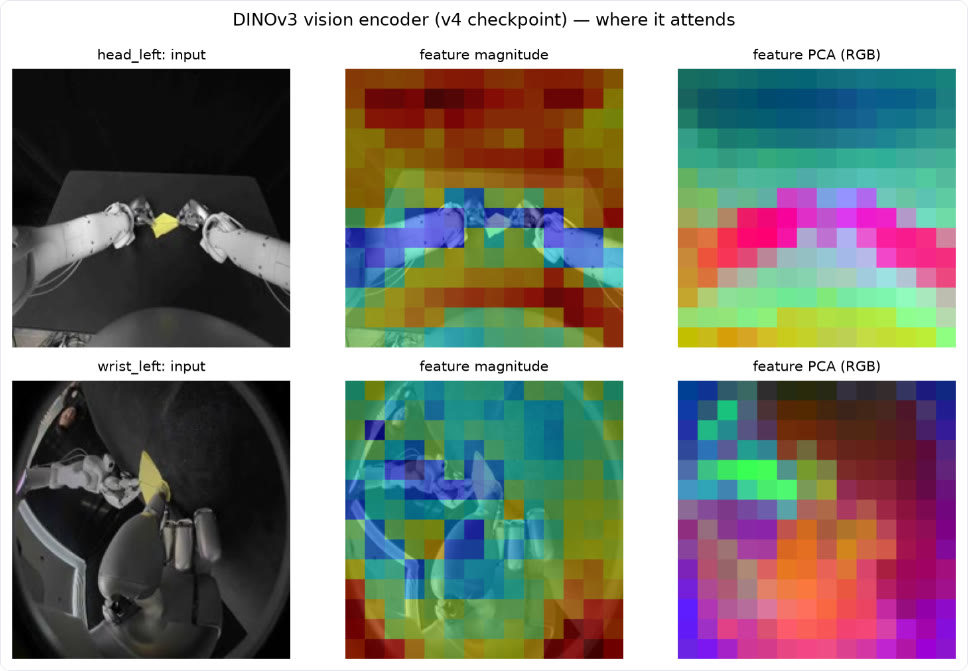
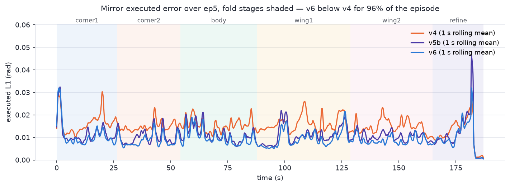

Teaching two dexterous hands to fold a paper airplane
FoldingACT is an end-to-end visuomotor policy for the IROS 2026 Robotic Origami Challenge. A bimanual robot with two 22-joint Sharpa hands must fold a paper airplane in six folds, from four cameras, ten fingertip tactile sensors and 65 joints of proprioception. I built the whole stack: data pipeline, a multimodal action-chunking transformer, ten trained versions, an Isaac Sim mirror, and a hardened Docker inference service that the organizers ran on their real robot.
Six folds, under ten minutes, judged by an origami master
Each attempt starts from a flat 15 × 15 cm sheet. An Origami Grand Master from the Nippon Origami Association judges pass or fail on whether the result is a recognizable plane; faster passes rank higher. Teams don't bring hardware: the organizers run every submission remotely on their own robot. That meant no robot in the loop for development, and evaluation only through a Docker image they execute.
A human-teleoperated demonstration from the training set, head camera, cropped to the workspace. Stage boundaries are my hand labels. They seeded the automatic labelling of all 582 training episodes.
Six synchronized streams, 30 Hz, three-minute episodes
The dataset is a gated LeRobot v3.0 corpus recorded by teleoperation. Every 33 ms it holds four RGB views, two tactile image streams, 10 fingertip 6-axis force/torque readings, 58 joint torques and the 65-D joint state and action. Episodes run 131–314 s (mean 176 s, ~5,300 control steps). That horizon is the main modelling challenge: an action-chunking policy must keep its place over hundreds of chunks.
Data engineering that mattered. I decoded the frames into a 14.8 M-key LMDB (94 GB). That took the loader from 34 to 1,430 samples/s (42×), so training became GPU-bound. Mid-collection the task itself changed (printed guide lines, folding flat on the table instead of in the air). I found the shift and trained only on the 582 post-change episodes. A DTW template transfer from two hand-labelled demos labelled all six fold stages automatically (leave-one-out boundary error 2.6–2.8 s).
| Split | Seasons | Episodes | Hours |
|---|---|---|---|
| Downloaded (stratified sample) | 60 | 849 | 45.2 |
| Training regime (post-change) | 38 | 582 | 28.5 |
| train / val | 524 / 58 | ||
| Competition-paper finetune set (v9+) | 38 | 610 | ≈25.8 |

FoldingACT: a multimodal action-chunking transformer
Reinforcement learning was ruled out on day one: there is no tractable reward for deformable paper and no task simulator. I chose imitation learning with an ACT-style conditional VAE. Every modality enters one transformer as tokens. The decoder emits 45 future joint targets at once, which smooths the motion and cuts the number of decisions over a three-minute task.
| Component | Design | Why |
|---|---|---|
| Vision | DINOv3 ViT-S/16, fine-tuned, gradient-checkpointed. One trunk shared by the two head views, one by the two wrist views; 4 × 196 tokens | Strong dense features at 21.6 M params per trunk fit the 16 GB budget |
| Touch | Sparsh ViT-B on 10 fingertip tiles (temporal pair 167 ms apart), contact gate, decoder cross-attention | Folding is contact-rich: tactile cut validation error 12.8 % (v2) and the ablation gap grew to 44.7 % (v3) |
| Proprioception | 153-D: joint state 65 + joint torque 58 + fingertip forces 30 | Torque and force carry pinch and press information that the cameras can't see |
| Fold phase | 6-way stage token. At serve time a FoldTracker sets it, with dwell, sustain and wall-clock budgets; v8 added a separate causal-TCN StageNet | Disambiguates visually similar moments in a long, repetitive task |
| Tempo | Tempo token for 1.0× / 1.25× / 1.5×, trained by contact-aware time warping | Faster passes rank higher |
| Transformer | d=512, 8 heads, 4 encoder / 3 decoder layers, 32-D latent (z = 0 at inference), masked L1 + KL | ACT recipe, deepened after a review found the 1-layer decoder underbuilt |
| Training | AdamW, cosine schedule, bf16, DDP on 2 GPUs. Serve-matched corruption: tactile dropout, torque dropout, observation noise, 0–4 frame latency jitter | Train on exactly what the server will see |

Ten versions, each gated before it shipped
Every candidate went through a fixed gate battery before it could replace the submission. The battery covered held-out validation L1, live-server replay of three held-out episodes through the actual serving stack, closed-loop stability proxies and tempo obedience. From v9 it added visual grounding and closed-loop drift.
Live-server replay error
Mean |predicted − demonstrated| joint target over 3 held-out episodes (15,773 frames), fed through the real policy server with real tactile input. Lower is better.
Training curves
Serve-matched validation L1 (normalized) every 1,000 steps. v9 and v10 are finetunes on a new paper corpus, so their numbers aren't comparable with the from-scratch runs.
An Isaac Sim mirror of the real robot
No task simulator exists for this challenge, and simulating paper is out of reach anyway. So I built a kinematic mirror: held-out demonstrations stream through the live policy server, and the predicted joint targets drive the robot's USD model in Isaac Sim 5.1, filmed by a virtual head camera that I calibrated against the real one. It can't show a fold succeed, but it exercises the exact deployment path and makes motion errors visible at a glance.
Mirror tracking error by version
Mean |pred − demo| over all 65 joints, averaged over 3 held-out episodes (radians).

Passing the organizers' safety checker: 308 violations → 0
Before any live run, the organizers replay a submission against a URDF "Shadow" checker. v8 came back with 308 violations from two independent mechanisms:
- 281 finger
lower_limitviolations. The training data hard-clips finger joints at exactly 0, and predictions straddled that floor. - 27 velocity jumps, all at chunk boundaries.
I reproduced the checker locally, then added a per-joint clamp and a 10-step continuity ramp on the first action. Together they remove every violation and improved one-step replay error (0.0246 → 0.0216). The first attempt (v8.1) widened a finger ceiling and failed live with 210 new violations once the fingers curled. Since then every bounds change is validated on both a hands-open and a hands-flexed fixture.
Two live sessions, no completed fold
The organizers ran the v9 policy on their robot twice. Neither session folded the paper. The hands moved purposefully for a few seconds, then slowed, closed into fists and pressed the sheet into a tent until a protective stop or the operator ended the episode. These are the organizers' head-camera recordings, cropped, at 2× speed.
| Session | Policy | Episodes run | Duration | How episodes ended | Folds |
|---|---|---|---|---|---|
| 2026-09-01 | v9.2 · sync | 10 (+5 not started) | 11–43 s | 6 protective stops, 4 operator stops | 0 |
| 2026-09-29 | v9.2 · async ×3, sync ×2 | 5 | 36–65 s | 4 protective stops, 1 operator stop | 0 |
The finger that locked
The logs show the mechanism clearly. Pick an episode below. The left middle-finger DIP joint is commanded to the joint ceiling and held there, far beyond anything in the demonstrations; the measured angle even settles above the command. In the long session-2 episodes it is pinned for 84–96 % of all steps. The effect is progressive, which is why the shorter session-1 episodes looked different.
Episode table
The policy had learned to replay its own state
In the demonstrations, the commanded action is roughly one servo step ahead of the measured state (correlation 0.984). So action ≈ f(state) is a near-perfect solution to the training loss, and vision gets demoted. This is the classic causal confusion failure of behaviour cloning. On the robot, the command sat 0.013 rad from the measured state (0.021 in demos), so small errors integrated with no visual restoring force, and any posture reached was held.
I measured it directly with two new gates:
- Visual grounding builds 112 observations where the camera and the joint state disagree, and measures whose trajectory the policy follows.
- Closed-loop drift rolls the policy against a fitted first-order model of the robot.
v9 followed the joint state in 94 % of conflicts.
I ruled out the other suspects one by one with measurements:
- sync vs. async execution: both locked;
- the organizers' 224 → 480 px camera patch: 0.0023 rad;
- colour cast in the finetune corpus: +1.6 %;
- serving latency: 36–76 ms with zero errors.
The v10 fix. I finetuned v9 with the joint state masked on 50 % of samples (a sentinel outside the normalized range) and 0.10 rad of noise on the rest, keeping clean targets. The images now have to carry the trajectory.
The gains grow with augmentation strength: a milder arm (30 % / 0.05 rad) lands halfway. So the effect comes from the shortcut-breaking, not from anything else in the recipe.
v10 was the final submission. It has not been run on the robot, so its real-world effect is unmeasured.
v9 (failed live) vs. v10 (final submission)
The cost is honest and expected. Once it can't copy the state, v10 reproduces demonstrated actions less precisely in teacher-forced evaluation. But that is the same metric on which v9 looked best before failing twice. Every closed-loop and grounding measure moves the right way.
A sealed inference service the organizers can run blind
The submission is a self-contained Docker image, exported as a .tar.zst with a sha256. Their sandbox runs it read-only, non-root and offline, so it has to work first time with no debugging access. It dials out as a Zenoh client and answers metadata, reset and infer queries. Each infer takes the 4 camera images, tactile, torque and joint state, and returns a float32 [45 × 65] chunk of absolute joint targets.
The interface changed twice during the challenge: websocket → Zenoh, then sync → async execution. I reworked the server, the transport equivalence tests and the submission builder each time.
| Inference latency (v10, organizer validator) | median 45.8 ms · max 73.6 ms |
|---|---|
| Latency on the real robot | 36–76 ms, 0 errors |
| Cold start | ≈ 35 s |
| Runtime | 1 GPU ≥ 3.5 GB, ≤ 16 GB RAM |
| Sandbox | read-only rootfs, UID 65532, cap-drop ALL, no network, digest-pinned base |
| Robustness checks | reset determinism, SIGTERM exit in 1.2 s, fail-fast without config, 0 Shadow violations |
| Serving safety | per-joint clamp, continuity ramp, tactile-pair interpolation, confidence-gated fold budget |
What I would tell myself on day one
- Teacher-forced metrics can certify a policy that fails closed-loop.v9 had the best offline error of any version (0.0143 rad) and failed both live sessions, because every gate fed it demo states and demo images.
- Measure modality authority directly.With absolute-position targets and action ≈ state, the shortcut is the default. A 112-pair conflict test exposed it (vision won 6 %); masking the state fixed it (97 %).
- Offline closed-loop tests must not leak the oracle.Feeding demo images while the simulated robot drifts supplies exactly the correction the real robot never gets. It made async look best offline; async then locked the hands live.
- Train on exactly what you serve.Serve-matched corruption (tactile/torque dropout, latency jitter, observation noise) took replay error from 0.0254 (v4) to 0.0159 (v6).
- Validate limits on data that actually reaches them.v8.1 passed on an open-hand fixture and failed live once the fingers curled. Two fixtures now gate every bounds change.
- Make serving logic independent of call rate.Step-count budgets expired 3× late at 10 Hz, and a tactile temporal pair collapsed to zero at 0.6 Hz. Wall-clock budgets and interpolation fixed both.
- Check alignment before trusting a discrepancy.An apparent 0.034 rad camera effect was misaligned frames: LeRobot v3 concatenates episodes into one video file. The true effect was 0.0023.
- Long data jobs need bounded memory and isolation.An unbounded futures queue reached about 39 GB and took the desktop down. Bounded in-flight windows and detached systemd units fixed it.
Repository map
policy/ model/ FoldingACT (folding_act.py), v3 decoder with tactile cross-attention, StageNet data/ LeRobot v3 → LMDB loaders, fold auto-labelling, retiming, normalization stats serve/ Zenoh policy service, FoldTracker, replay / transport-equivalence tests sim/ Isaac Sim mirror (mirror_episode.py), joint-order mapping train_full.py DDP training with serve-matched corruption eval_gate_battery.py offline gates · eval_visual_grounding.py · eval_closed_loop.py scripts/ dataset download + predecode, clamp-bound fitting, submission image builder docs/ this page, results summary, data notes
The organizers' inference kit and robot description files are not redistributed here. The dataset is gated on Hugging Face (SharpaIT/Robotic_Origami_Challenge).